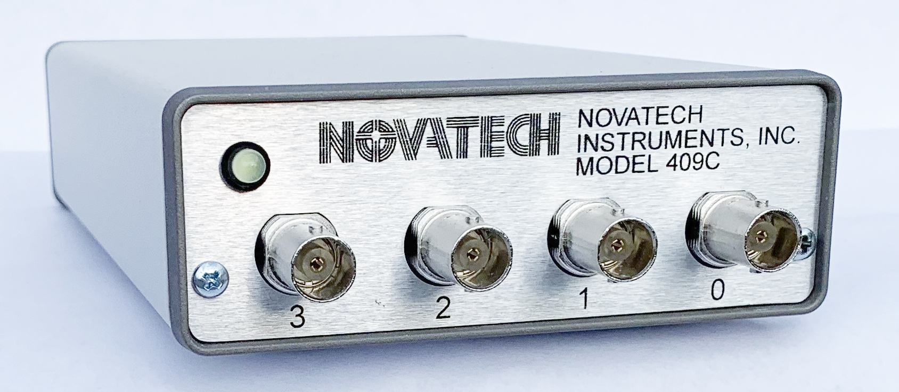

409C

Model 409C 171MHz DDS signal generator. The 409C is an upgrade to the 409B.
It has an upgraded table feature that supports 4 channels with faster speeds, and the table commands are in decimal instead of HEX. See application note AN009 for a feature comparison of the 409B vs 409C.